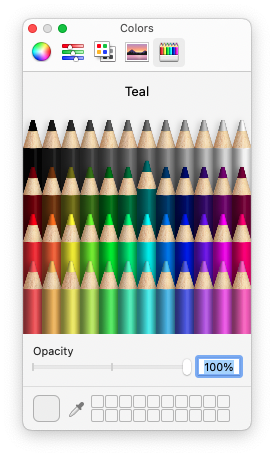

|
xtd
0.2.0
|
Loading...
Searching...
No Matches
color_dialog.cpp
demonstrates the use of xtd::forms::color_dialog dialog.
- Windows


- macOS
- 

- Gnome


#include <xtd/drawing/drawing_2d/hatch_brush>
#include <xtd/drawing/color_translator>
#include <xtd/drawing/system_colors>
#include <xtd/forms/application>
#include <xtd/forms/button>
#include <xtd/forms/color_dialog>
#include <xtd/forms/control_paint>
#include <xtd/forms/form>
#include <xtd/forms/label>
#include <xtd/forms/panel>
using namespace xtd;
using namespace xtd::drawing;
using namespace xtd::drawing::drawing_2d;
using namespace xtd::forms;
public:
form1() {
text("Color dialog example");
button1.click += [&] {
dialog.color(selected_color);
dialog.custom_colors(custom_colors);
selected_color = dialog.color();
color_label.text(color_translator::to_html(selected_color));
test_zone.invalidate();
}
custom_colors = dialog.custom_colors();
};
test_zone.border_style(border_style::inset).double_buffered(true);
e.graphics().fill_rectangle(hatch_brush {hatch_style::wide_checker_board, color::from_argb(0x66, 0x66, 0x66), color::from_argb(0x99, 0x99, 0x99)}, e.clip_rectangle());
control_paint::draw_border(test_zone, e.graphics(), test_zone.border_style(), test_zone.border_sides(), application::style_sheet().system_colors().control_text(), rectangle::add(e.clip_rectangle(), -1, -1));
};
color_label.auto_size(true);
}
private:
color_dialog::colors custom_colors = {color::red, color::green, color::blue, color::yellow, system_colors::control()};
};
auto main() -> int {
application::run(form1 {});
}
static xtd::string to_html(const xtd::drawing::color &value) noexcept
Translates the specified xtd::drawing::color structure to an HTML string color representation.
static const xtd::drawing::color yellow
Gets a system-defined color that has an ARGB value of 0xFFFFFF00. This field is constant.
Definition color.hpp:476
static const xtd::drawing::color green
Gets a system-defined color that has an ARGB value of 0xFF008000. This field is constant.
Definition color.hpp:212
static const xtd::drawing::color red
Gets a system-defined color that has an ARGB value of 0xFFFF0000. This field is constant.
Definition color.hpp:401
static const xtd::drawing::color blue
Gets a system-defined color that has an ARGB value of 0xFF0000FF. This field is constant.
Definition color.hpp:86
static xtd::drawing::color from_argb(uint32 argb) noexcept
Creates a xtd::drawing::color class from a 32-bit ARGB value.
Defines a rectangular xtd::drawing::brush with a hatch style, a foreground color, and a background co...
Definition hatch_brush.hpp:31
Defines a xtd::drawing::brush of a single color. Brushes are used to fill graphics shapes,...
Definition solid_brush.hpp:29
static xtd::drawing::color control()
Gets a xtd::drawing::color structure that is the face color of a 3-D element.
static const xtd::forms::style_sheets::style_sheet & style_sheet() noexcept
Gets current xtd::forms::style_sheets::style_sheet style sheet.
static void run()
Begins running a standard application message loop on the current thread, without a form.
Represents a common dialog box that displays available colors along with controls that enable the use...
Definition color_dialog.hpp:34
xtd::array< xtd::drawing::color > colors
Represents an xtd::drawing::color array.
Definition color_dialog.hpp:39
drawing::color color() const noexcept
Gets the color selected by the user.
Represents a window or dialog box that makes up an application's user interface.
Definition form.hpp:54
Provides data for the xtd::forms::control::paint event.
Definition paint_event_args.hpp:30
@ wide_checker_board
Specifies a hatch that has the appearance of a checkerboard with squares that are twice the size of x...
Definition hatch_style.hpp:181
@ ok
The dialog box return value is OK (usually sent from a button labeled OK).
Definition dialog_result.hpp:47
@ button1
The first button on the message box is the default button.
Definition message_dialog_default_button.hpp:24
@ inset
Defines a 3D inset border. The effect depends on the border color value.
Definition border_style.hpp:30
The xtd::drawing::drawing_2d namespace provides advanced two-dimensional and vector graphics function...
Definition compositing_mode.hpp:12
The xtd::drawing namespace provides access to GDI+ basic graphics functionality. More advanced functi...
Definition actions_system_images.hpp:10
The xtd::forms namespace contains classes for creating Windows-based applications that take full adva...
Definition texts.hpp:217
Contains classes that represent ASCII and Unicode character encodings; abstract base classes for conv...
Definition basic_string_builder.hpp:16
The xtd namespace contains all fundamental classes to access Hardware, Os, System,...
Definition abstract_object.hpp:8
void add(const drawing::size &sz) noexcept
Adds this xtd::drawing::rectangle by the specified amount.
Generated on Fri May 16 2025 13:14:38 for xtd by Gammasoft. All rights reserved.